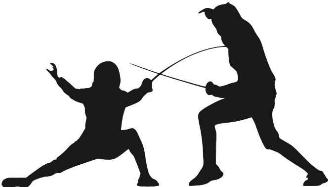

Fencing

Fencing is a combat sport, but it is also a sport for gentlemen. Usually, fencing was used to show that you were willing to risk your life to restore your honor, whether someone insulted you, or you did something cowardly, rather than to kill.
Fencing was a sport that I started when I was very young. When I started, I was about 6, a little boy on an adventure at a "superhero camp". We were coming back the gym, when I saw some people, holding swords and hitting each other. I thought to myself, "Hey, that looks like something a superhero would do!" As you can probably tell, I was really into superheroes. When I returned home, I was talking to my mom very diplomatically with all the benefits of joining fencing, and she agreed to look into it. When she spoke to me a week later, I was very excited. It was “a dream come true”. I thought I was about to become a Musketeer. I told her "This is what I want to do." So, she found a local fencing club, and put me there as a intro class. However, I was too little and too weak to hold up a foil, so the coach told me to wait a year or two, and come back when I was ready. I had asked my mother every week, "Can I go back yet?", and every time the answer was "Coach told you to wait a year or two, not a couple weeks." Eventually, I realized that I would have to wait the entire year, so I stopped asking. When my time passed, my mother asked me if I wanted to go back. Immediately, I realized that it was time. I had started out with all the other newer kids, but I eventually moved up, where I found I was no longer the top of the class. So, I worked hard, and got faster and stronger. When I finally moved to the advanced class, I started over again, and now I am working to become even better.
I enjoy fencing because when I get on the strip, nothing else matters. When it is just me and my opponent, I stop and let my mind take over. I enjoy the rush of adrenaline, and all the energy. I enjoy the challenge that my opponent gives me to win. And when I do win, especially when it is 14-14, I enjoy feeling all the energy and nervousness leave my body, and elation entering me, so I can relax. I get the same feelings when I lose, but instead of elation, I feel resignation, until the next event. Between those times, I review the bout and see what I did wrong and how I can fix it. But I also have people I look to, people who are my idols. Alexander Massialas is one of them. An American foil fencer he won a silver medal in the team event in 2014, earned a silver medal for the 2016 Summer Olympics, and won bronze with the US Men's Team event that same year. He stays cool under pressure and almost never shows signs of anger on the strip. Even cooler, his dad is a coach for Team USA!
Some of my short term goals, for say the next year or two, are things I have not yet accomplished. One is to get a silver or gold in Youth 12 or 14, to fence and get top 8 in the Fencing Junior Olympics. Some long term goals that I have are to fence in the 2024 Paris Olympics. Some steps that I need to take include training hard, practicing at home, on my own, and improving skills that I use in fencing using other sports, such as track and field to improve my stamina, gymnastics to improve my upper body strength, and strength training to improve my upper body as well.